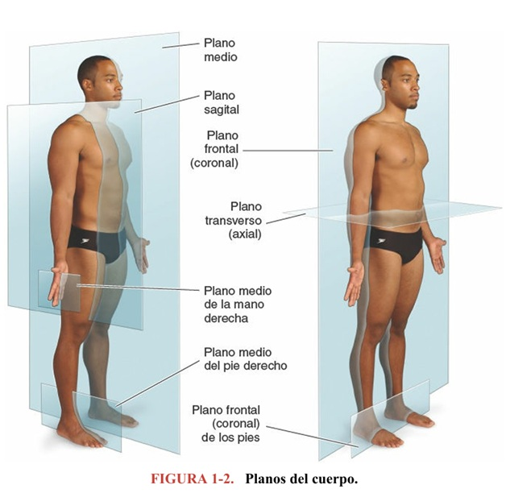
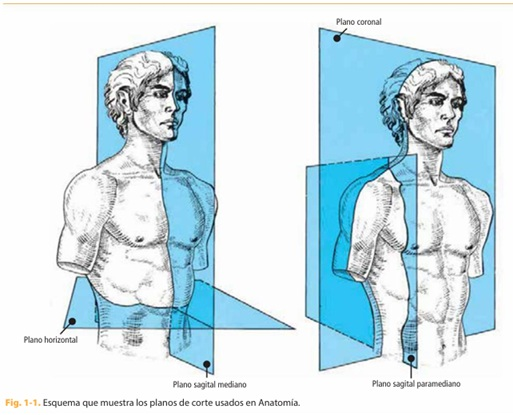
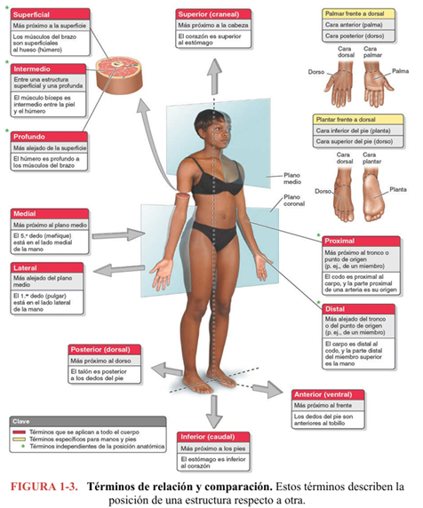
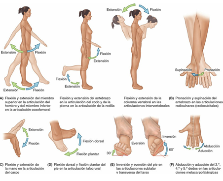
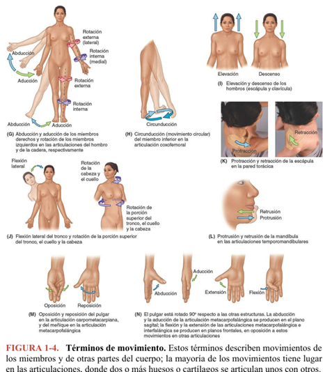

¿Por qué empezamos por aquí?
Toda la carrera vamos a nombrar estructuras, describir su ubicación y explicar cómo se mueven. Antes de estudiar un solo músculo, hueso o nervio necesitamos un sistema de referencia compartido: un acuerdo sobre desde dónde se mira el cuerpo y con qué palabras se describe. Sin ese acuerdo, «arriba», «detrás» o «hacia adentro» significan cosas distintas para cada persona. Con él, una descripción anatómica es inequívoca en cualquier país, camilla o informe clínico.
En Optometría esto no es un formalismo: la posición de la mirada, la orientación de los ejes del ojo y la lectura de un corte de OCT o de una tomografía de órbita se apoyan exactamente en el mismo marco. Hoy montamos ese marco.
- Definir la posición anatómica y justificar por qué es la referencia universal.
- Reconocer los planos (sagital/mediano, frontal/coronal, transverso/horizontal, oblicuo) y los ejes (sagital, longitudinal, transversal) del cuerpo.
- Manejar con precisión los términos de relación, lateralidad y movimiento.
- Traducir cada concepto a su interfaz optométrica: posición primaria de la mirada, ejes de Fick, planos de imagen ocular.
Terminología anatómica internacional
La anatomía tiene un vocabulario propio y estandarizado, cuya versión oficial es la Terminologia Anatomica (Comité Federativo de Terminología Anatómica, FCAT/FIPAT; con traducción al español avalada por las sociedades anatómicas). Sus principios son sencillos: los nombres deben ser informativos y descriptivos, se evitan los epónimos (nombres propios como «trompa de Eustaquio») porque varían entre países, y se evitan los homónimos para no generar confusión.
Los epónimos de uso clínico muy extendido suelen citarse entre paréntesis o corchetes junto al término oficial, para reducir ambigüedad. En este curso privilegiamos el término internacional, pero reconoceremos el epónimo cuando siga siendo la forma que verás en la práctica.
Idea clave
La terminología no es memorización decorativa: es la herramienta de comunicación entre profesionales de la salud. Un buen término dice, por sí solo, dónde está y hacia dónde apunta la estructura.
La posición anatómica
Todas las descripciones anatómicas se expresan como si el cuerpo estuviera en posición anatómica, sin importar la postura real del sujeto (de pie, acostado, en decúbito o en una imagen). Es el «cero» a partir del cual todo se orienta.
Cuerpo y cabeza
De pie, erguido; cabeza recta y mirada dirigida al frente (horizonte).
Miembros superiores
A los lados del tronco, con las palmas hacia adelante (antebrazos en supinación).
Miembros inferiores
Juntos, con los pies paralelos y los dedos dirigidos hacia adelante.
¿Por qué las palmas al frente?
Así el radio y la ulna quedan paralelos y no cruzados: evita ambigüedad al describir el antebrazo.
Perla optométrica
El equivalente ocular de la posición anatómica es la posición primaria de la mirada (PPM): paciente mirando de frente a un punto lejano en el horizonte, con la cabeza recta. Es el «cero» desde el cual describimos toda desviación ocular (foria, tropia) y todo movimiento del globo.
Planos anatómicos
Un plano es una superficie imaginaria que atraviesa el cuerpo en posición anatómica y lo secciona. Los planos organizan la anatomía seccional y, sobre todo, la lectura de imágenes (TC, RM, ecografía, OCT). Hay tres familias principales y una categoría «comodín».
Plano sagital medio (mediano)
Plano vertical que pasa por el centro del cuerpo y lo divide en mitad derecha e izquierda simétricas. Es único.
◉ Eje visual del ojo en aducción/abducción se describe respecto a élPlanos sagitales (paramedianos)
Verticales y paralelos al plano medio, a cualquier distancia de él (p. ej., un plano sagital por la pupila).
Plano frontal (coronal)
Vertical, en ángulo recto al plano medio; divide el cuerpo en porción anterior y posterior.
◉ Separa segmento anterior y posterior del ojoPlano transverso (horizontal / axial)
En ángulo recto a los dos anteriores; divide en porción superior e inferior. Los radiólogos lo llaman axial.
◉ Corte axial de órbita en TC/RMPlanos oblicuos: cualquier corte que no se alinee con los anteriores. Son frecuentes en la clínica real, donde las estructuras rara vez «obedecen» a los planos puros.


Ayuda de memoria
Sagital parte en der/izq · coronal (frontal) parte en ade/atrás · transverso (axial) parte en arriba/abajo. Piensa: la corona se pone de frente (coronal = frontal); el eje de un avión visto desde arriba (axial = transverso).
Ejes del cuerpo
Un eje es una línea imaginaria alrededor de la cual ocurre un movimiento. Mientras el plano es la «hoja» que corta, el eje es el «pivote» sobre el que se gira. Cada movimiento articular ocurre en un plano y en torno a un eje perpendicular a ese plano. Esta pareja plano–eje es la clave para entender todo el capítulo de movimiento.
Eje sagital
Anteroposterior (adelante ↔ atrás), horizontal. Perpendicular al plano frontal.
Eje longitudinal
Craneocaudal / vertical (arriba ↔ abajo). Perpendicular al plano transverso.
Eje transversal (frontal)
Laterolateral (izq ↔ der), horizontal. Perpendicular al plano sagital.
La regla de oro
El movimiento sucede en el plano y alrededor del eje que lo perfora perpendicularmente. Ejemplo: la flexión y extensión del hombro ocurren en el plano sagital, girando en torno al eje transversal (frontal).
| Movimiento | Plano | Eje (perpendicular) |
|---|---|---|
| Flexión / extensión | Sagital | Transversal (frontal) |
| Abducción / aducción | Frontal (coronal) | Sagital (anteroposterior) |
| Rotación interna / externa | Transverso | Longitudinal (vertical) |
Perla optométrica · ejes de Fick
El globo ocular gira dentro de la órbita alrededor de tres ejes que pasan por su centro de rotación —los ejes de Fick— contenidos en el plano de Listing:
- Eje vertical (Z) → aducción y abducción (mirada horizontal).
- Eje horizontal (X) → supraducción (elevación) e infraducción (depresión).
- Eje anteroposterior (Y) → inciclotorsión y exciclotorsión (torsión).
Son la traducción exacta de los ejes del cuerpo al globo ocular: la misma lógica «plano–eje» que usas para el hombro explica la acción de los músculos extraoculares.
Términos de relación y comparación
Son parejas de adjetivos opuestos que describen la posición de una estructura respecto de otra en posición anatómica. Nunca son absolutos: el codo es proximal respecto de la muñeca, pero distal respecto de el hombro.
| Término | Significado | Ejemplo |
|---|---|---|
| Superior / craneal / cefálico | Más cerca de la cabeza | Los ojos son superiores a la nariz |
| Inferior / caudal | Más cerca de los pies | La nariz es inferior a los ojos |
| Anterior / ventral | Hacia el frente | La córnea es anterior al cristalino |
| Posterior / dorsal | Hacia atrás | La retina es posterior al cristalino |
| Medial | Más cerca del plano medio | El 5.º dedo es medial en la mano |
| Lateral | Más lejos del plano medio | El pulgar es lateral en la mano |
| Proximal | Más cerca del tronco / origen | El codo es proximal al carpo |
| Distal | Más lejos del tronco / origen | La mano es distal al codo |
| Superficial | Más cerca de la superficie | La piel es superficial al músculo |
| Profundo | Más lejos de la superficie | El hueso es profundo al músculo |
Términos combinados
Cuando la posición es intermedia se combinan: superolateral (hacia la cabeza y lejos del plano medio), inferomedial (hacia los pies y cerca del plano medio), anteroinferior, etc.
Perla optométrica · el mapa del fondo de ojo
En el ojo, «medial/lateral» se sustituyen por nasal (hacia la nariz) y temporal (hacia la sien). Así describimos el fondo de ojo: la mácula está temporal al disco óptico (papila), y la papila está nasal a la mácula. En cada retina hablamos de cuadrantes superonasal, superotemporal, inferonasal e inferotemporal — términos combinados aplicados.

Términos de lateralidad
Bilateral
Estructura par, con componente derecho e izquierdo (los riñones, los ojos).
Unilateral
Presente en un solo lado (el bazo).
Homolateral / ipsilateral
En el mismo lado del cuerpo.
Contralateral
En el lado opuesto (la mano derecha es contralateral a la izquierda).
Interfaz clínica · vía visual
Estos términos son decisivos en neurooftalmología. Por el quiasma óptico, las fibras de la retina nasal se decusan (cruzan) y las temporales siguen homolaterales. Por eso una lesión retroquiasmática produce una hemianopsia contralateral: entender «ipsilateral vs. contralateral» hoy te ordena todo el capítulo de campos visuales más adelante.
Términos de movimiento
Los movimientos se producen en las articulaciones y se describen —recuérdalo— por el plano en que ocurren y el eje alrededor del cual giran.
Flexión / Extensión
Disminuir / aumentar el ángulo articular. Plano sagital, eje transversal.
Abducción / Aducción
Alejar / acercar del plano medio. Plano frontal, eje sagital.
Rotación interna (medial) / externa (lateral)
Giro sobre el eje longitudinal.
Circunducción
Secuencia circular de flexión, abducción, extensión y aducción.
Pronación / Supinación
Antebrazo: palma abajo / palma arriba.
Inversión / Eversión
Planta del pie hacia el plano medio / hacia afuera.
Flexión dorsal / plantar
Pie hacia arriba / hacia abajo (tobillo).
Protracción / Retracción
Adelantar / retraer (escápula, mandíbula: protrusión/retrusión).
Elevación / Descenso
Subir / bajar (hombros, párpado).
Oposición / Reposición
Pulgar hacia los otros dedos / regreso.


Perla optométrica · ducciones
Los movimientos monoculares se llaman ducciones y usan el mismo vocabulario: aducción (ojo hacia la nariz) y abducción (hacia la sien) sobre el eje vertical; supraducción e infraducción sobre el eje horizontal; inciclo-/exciclotorsión sobre el eje anteroposterior. Cuando ambos ojos se mueven juntos hablamos de versiones (mismo sentido) y vergencias (sentido opuesto: convergencia/divergencia). Todo el examen de motilidad ocular es este glosario aplicado.
Decúbitos
Aunque describimos siempre en posición anatómica, en la práctica el paciente puede estar acostado. Conviene nombrar bien esas posiciones:
Decúbito supino
Acostado boca arriba (dorsal).
Decúbito prono
Acostado boca abajo (ventral).
Decúbito lateral
Acostado sobre un lado (derecho o izquierdo).
Interfaz clínica · examen
La posición del paciente condiciona la exploración: la lámpara de hendidura exige al paciente sentado con mentonera; la oftalmoscopía indirecta o ciertas cirugías se hacen en decúbito supino. Describir bien la posición evita errores de lateralidad (OD/OS).
Todo junto: el marco anatómico en el ojo
Este es el sello del curso: cada tema se conecta con su interfaz optométrica. La organización corporal no es la excepción — es su fundamento. Antes de cerrar, veámoslo integrado:
| Concepto corporal | Equivalente ocular / optométrico |
|---|---|
| Posición anatómica | Posición primaria de la mirada (PPM) |
| Eje longitudinal · transversal · sagital | Ejes de Fick (vertical Z · horizontal X · anteroposterior Y) en el plano de Listing |
| Plano transverso / axial | Corte axial de órbita en TC/RM |
| Plano frontal / coronal | Límite entre segmento anterior y posterior del ojo |
| Medial / lateral | Nasal / temporal (fondo de ojo, retina, campo) |
| Abducción / aducción / flexión-extensión | Ducciones del globo (abducción, aducción, supra-/infraducción) |
| Ipsilateral / contralateral | Decusación en el quiasma y hemianopsias |
Cierre
Si dominas hoy «plano–eje–posición», el examen de motilidad ocular, la lectura de un OCT y la localización de una lesión en la vía visual dejan de ser memoria suelta y pasan a ser el mismo sistema aplicado al ojo.
Síntesis
- La posición anatómica es el «cero» universal; en el ojo, la PPM.
- Tres planos (sagital/mediano, frontal/coronal, transverso/axial) + oblicuos.
- Tres ejes (sagital, longitudinal, transversal). El movimiento ocurre en un plano, en torno al eje perpendicular.
- Los términos de relación son siempre relativos; en el ojo, medial/lateral → nasal/temporal.
- Lateralidad (ipsi- vs. contralateral) es la base de los campos visuales.
- El movimiento corporal y las ducciones/versiones oculares comparten glosario.
Quiz · Organización corporal
Autoevaluación de 12 preguntas sobre los contenidos de esta clase. El enlace se comparte en clase.
Bibliografía
- Moore KL, Dalley AF, Agur AMR. Anatomía con orientación clínica, 8.ª ed. — Introducción: terminología, posición anatómica, planos, términos de relación y movimiento.
- Latarjet M, Ruiz Liard A. Anatomía humana, 5.ª ed., Tomo 1 — Generalidades de anatomía humana: planimetría, ejes y planos de sección, posición anatómica.
- Tortora GJ, Derrickson B. Principios de anatomía y fisiología, 15.ª ed.
- Terminologia Anatomica (FCAT/FIPAT) — nomenclatura oficial.